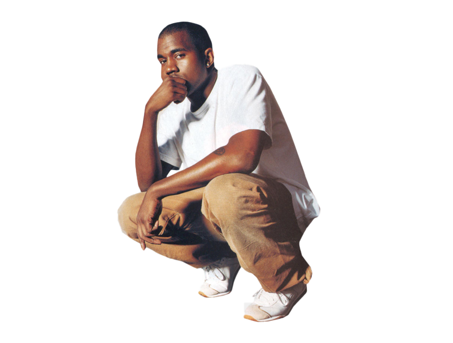

Hello! Welcome to a page all about Kanye West. Kanye West is a Grammy-Winning American hip hop artist and entrepreneur. He's known for multiple successful albums such as The College Dropout, The Life of Pablo, & Ye. He has also produced art for other famous artists such as Beyonce, Jay-Z, Pusha T, and more! This fan page will look into all the works that Kanye has put out into the world and the impact that it has.
